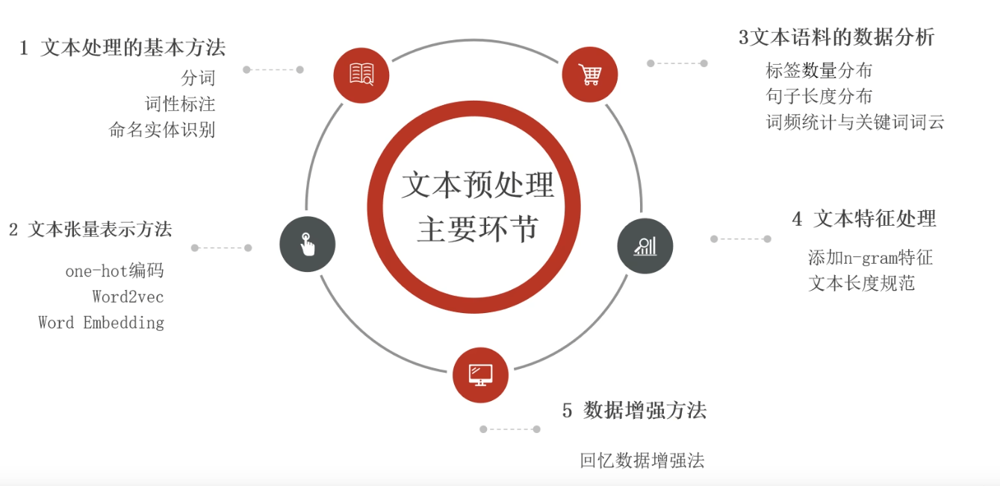

NLP
NLP 概述
每种动物都有自己的语言，机器也是！ 自然语言处理（NLP）就是在机器语言和人类语言之间沟通的桥梁，以实现人机交流的目的。 人类通过语言来交流，狗通过汪汪叫来交流。机器也有自己的交流方式，那就是数字信息。
NLP 文本预处理
什么是文本预处理？
文本预处理就是在预料输送给模型之前所作的一系列工作，目的是让这些语料满足 LLM 的输入要求。比如，只有将一个一个 token 转换为 embedding，模型才能理解以及对这个 token 做后续的计算。
文本处理的流程 ⭐⭐⭐

文本处理的基本方式
1. 分词 ⭐⭐⭐
分词就是把连续的字序列按照某种规范重新组合成词序列的过程。词是语言语义理解的最小单元。不同于英文靠空格分隔单词，中文没有天然的分词边界，需要额外的算法处理。常用的中文分词工具：
| 工具 | 特点 |
|---|---|
jieba |
最流行的 Python 中文分词库，支持多种分词模式 |
SnowNLP |
轻量 Python 中文处理工具，支持分词、词性标注、情感分析 |
pyltp |
哈工大 LTP 分词工具，支持分词、词性标注、依存句法分析 |
THULAC |
清华大学中文分词工具，学术性强 |
IK Analyzer |
Java 实现，常用于 Elasticsearch 分词 |
jieba 是 Python 实现的中文分词库，主要有三种分词模式：
| 模式 | 说明 | 函数 |
|---|---|---|
| 精确模式 | 试图将句子最精确地切开，适合文本分析 | jieba.cut(lcut_all=False) |
| 全模式 | 把句子中所有的可以成词的词语都扫描出来，速度快，但会有歧义 | jieba.cut(cut_all=True) |
| 搜索引擎模式 | 在精确模式基础上，对长词再次切分，提高召回率 | jieba.cut_for_search() |
下面主要演示 jieba 分词器的用法。
官方项目
具体用法详见 jieba GitHub，主要的操作就是分词、加载用户的自定义词典、通过 TF-IDF 算法来提取关键字等。
import jieba
text = '我爱学习，我爱敲代码'
# 精确模式：cut_all=False (默认)
words = jieba.cut(text, cut_all=False)
print('/ '.join(words))
输出：
说明
精确模式会尽量精确地切开句子，保留最合理的分词结果，避免歧义，适合大多数场景。
2. 命名实体识别 - NER
人名、地名、机构名等专业名词统称为命名实体，NER(Named Entity Recongnition) 则是在一段文本中识别出可能存在的命名实体，这个任务是 AI 解决 NLP 领域的重要基础。
3. 词性标注 - POS
词性标注则是标出一段文本中每个词汇的词性，词性是对语言文本的另一个角度的理解，也是 AI 解决 NLP 高阶任务的基础。
from jieba import posseg
# res 是一个生成器
res = posseg.cut("小明硕士毕业于中国科学院计算所，后在日本京都大学深造
# item 是 jieba 自定义的 class，它有 word, flag 这两个属性
for item in res:
print(type(item), item.word, item.flag, sep=" ")
# 输出
<class 'jieba.posseg.pair'> 小明 nr
<class 'jieba.posseg.pair'> 硕士 n
<class 'jieba.posseg.pair'> 毕业 n
<class 'jieba.posseg.pair'> 于 p
<class 'jieba.posseg.pair'> 中国科学院 nt
<class 'jieba.posseg.pair'> 计算所 n
<class 'jieba.posseg.pair'> ， x
<class 'jieba.posseg.pair'> 后在 t
<class 'jieba.posseg.pair'> 日本京都大学 nt
<class 'jieba.posseg.pair'> 深造 v
文本张量的表示 ⭐⭐⭐
将一段文本使用张量的形式表示，这个过程就叫做文本张量表示，词表示成词向量，一句话就构成了一个词向量矩阵。做这个转换是因为计算机无法直接理解人类自然语言，所以要把文本转为计算机可以理解和计算的形式，也就是张量。
1. one-hot
One-Hot 编码 是最基础的离散表示方法：
- 词汇表大小就是向量维度
- 每个词对应一个向量，仅在该词索引位置为 1，其余位置全为 0
- 优点：简单直观，实现容易
- 缺点：维度灾难（词汇表大时维度极高），并且完全丢弃了词与词之间的联系，无法表示词间语义相关性。
"""
演示独热编码的生成 + 使用
"""
# 词汇表
words = ['周杰伦', '陈奕迅', '王力宏', '吴亦凡', '刘德华']
label = [0, 1, 2, 3, 4]
dic = dict(zip(words, label))
def one_hot(word) -> list:
"""
生成独热编码
:param word:
:return:
"""
if word not in dic:
print('没有该词')
raise ValueError
res = [0] * len(dic)
res[dic[word]] = 1
return res
# 测试
print(one_hot('周杰伦')) # [1, 0, 0, 0, 0]
print(one_hot('陈奕迅')) # [0, 1, 0, 0, 0]
2. word2vec
Word2Vec 是 Google 提出的词嵌入模型，核心思想：
- 通过浅层神经网络在大规模语料上训练，将词映射为低维稠密向量
- 能够捕捉词语义相似度：语义相近的词在向量空间中距离更近
支持两种训练模式：
- CBOW：根据上下文预测中心词，适合小规模语料
- Skip-gram：根据中心词预测上下文，适合大规模语料
Word2Vec 的出现让词表示进入了 embedding 时代，是 NLP 里程碑式的工作。下面是通过 FastText 去训练词向量的过程，具体用法参考官方文档。
# 获取与输入词语义最相近的 N 个词
words = model.get_nearest_neighbors("人工智能", k=10)
for similarity, word in words:
print(f"{word}: {similarity:.4f}")
输出示例：
| 参数 | 说明 | 默认值 |
|---|---|---|
model |
训练模式 cbow 或 skipgram |
skipgram |
dim |
词向量维度 | 100 |
ws |
上下文窗口大小 | 5 |
minCount |
最小词频阈值 | 5 |
epoch |
训练轮数 | 5 |
lr |
学习率 | 0.05 |
thread |
线程数 | cpu 核心数 |
3. word Embedding
Word Embedding（词嵌入） 是更通用的概念：
- 将离散的词映射为低维稠密向量的过程都可称为词嵌入
- 在现代深度学习中，通常指神经网络的 Embedding 层，它是一个可训练的参数矩阵
- 预训练词嵌入（Word2Vec/GloVe）可以直接拿来使用，也可以在下游任务中微调
import torch
import torch.nn as nn
# 词汇表大小 1000，嵌入维度 128
embedding = nn.Embedding(num_embeddings=1000, embedding_dim=128)
# 输入：两个句子，每个句子 5 个词的索引
x = torch.randint(0, 1000, (2, 5)) # [batch_size, seq_len]
# 输出：[batch_size, seq_len, embedding_dim]
output = embedding(x)
print(output.shape) # torch.Size([2, 5, 128])
区别
one-hot：人工编码，稀疏向量，无法训练word2vec：特定的词嵌入训练方法，得到静态词向量word embedding：通用概念，指任何将词转为向量的方法，包括可训练的嵌入层
文本的数据分析
文本数据分析能够帮助我们理解数据语料，快速检查出语料可能存在的问题，它也能一定程度上指导我们的超参数选择。例如，关于标签 Y，分类问题查看标签是否均匀；关于数据 X，查看有没有脏数据，整体数据长度分布等等。
文本特征处理
为语料添加具有普适性的文本特征，让模型的处理更加高效。常用的方法：
核心思想：把连续的 n 个词/字符当作一个特征单元，从而捕捉局部上下文信息。
n=1→ unigram（一元语法，单个词）n=2→ bigram（二元语法，连续两个词）n=3→ trigram（三元语法，连续三个词）
作用：增加特征维度，引入上下文信息，提升模型表现；一般取 2-3 足够。
缺点：随着 n 增大，特征空间维度爆炸，特征矩阵极度稀疏。
手动实现 ngram 提取也很简单：
import jieba
def get_ngram(words: list, n:int) -> list:
"""
手动提取 n-gram
:param words: 分词后的词语列表
:param n: n 值
:return: n-gram 列表
"""
res = []
for i in range(len(words) - n + 1):
res.append(' '.join(words[i:i+n]))
return res
# 分词示例
text = '我爱学习自然语言处理'
words = list(jieba.cut(text))
print(f"分词结果: {words}")
# 提取二元语法 (bigram)
print(f"bigram: {get_ngram(words, 2)}")
# 提取三元语法 (trigram)
print(f"trigram: {get_ngram(words, 3)}")
输出：
分词结果: ['我', '爱', '学习', '自然语言', '处理']
bigram: ['我 爱', '爱 学习', '学习 自然语言', '自然语言 处理']
trigram: ['我 爱 学习', '爱 学习 自然语言', '学习 自然语言 处理']
也可以使用 nltk 现成工具：
为什么需要？ 深度学习模型训练时，要求一个批次（batch）内所有样本长度一致，因此需要统一规范。
做法： - 超过最大长度的句子 → 截断 - 不足最大长度的句子 → 填充（通常用 0 填充）
import jieba
def standardize_length(words, max_len, pad_token=0):
"""
规范文本长度：截断 + 填充
:param words: 分词后的词索引列表
:param max_len: 目标长度
:param pad_token: 填充标记
:return: 长度统一的列表
"""
if len(words) >= max_len:
# 截断
return words[:max_len]
else:
# 填充
return words + [pad_token] * (max_len - len(words))
# 示例
text = '我爱学习自然语言处理'
words = list(jieba.cut(text))
word2idx = {word: i+1 for i, word in enumerate(words)} # 0 留作填充
indices = [word2idx[w] for w in words]
print(f"原始长度: {len(indices)}, indices: {indices}")
# 测试不同 max_len
print(f"max_len=10: {standardize_length(indices, 10)}")
print(f"max_len=3: {standardize_length(indices, 3)}")
输出：